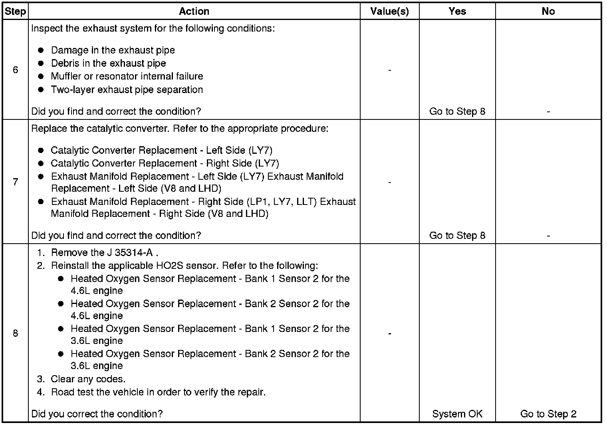

Restricted Exhaust
Restricted Exhaust
Diagnostic Aids
Caution: Refer to Hot Exhaust System Caution (Hot Exhaust System Warning) .
For dual exhaust systems a quick check of exhaust flow will help determine which side of the exhaust system is restricted. The side that has less exhaust flow is the side that will be suspect, and diagnosis should begin there.
Test Description
The numbers below refer to the step numbers on the diagnostic table.
4. The exhaust system has very low back pressure under normal conditions. If the exhaust system is restricted, a significant increase in the exhaust pressure is noticed on the J 35314-A Exhaust Back Pressure Gage.
Removing the heated oxygen (HO2S) sensor may set a DTC. When finishing this diagnostic table, be sure to clear all codes.
5. This step will isolate the catalytic converter from the remainder of the exhaust system.
8. Confirming that the condition has been fixed is essential. If the symptom still exists and the vehicle has a dual exhaust system, proceed to step 2 and repeat diagnostic procedure on the opposite exhaust pipe.
